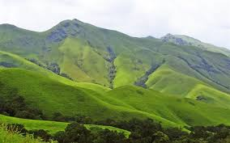

Tourist Guide
Kudremukh Hill Station.

Kuduremukha is a mountain range and name of a peak located in Chikkamagaluru district, in Karnataka, India. It is also the name of a small hill station cum mining town situated near the mountain, about 48 kilometres from Karkala and around 20 kilometres from Kalasa. The name Kuduremukha literally means 'horse-face' (Kannada) and refers to a particular picturesque view of a side of the mountain that resembles a horse's face. It was also referred to as 'Samseparvata', historically since it was approached from Samse village. Kuduremukha is Karnataka's 2nd highest peak after Mullayangiri. The nearest International Airport is at Mangalore which is at distance of 99 kilometres.Kudremukh trek is any adventure buffs dream. ... Kudremukh literally means horse face, as a particular side of the mountain looks like the face of a horse. The peak is about 1,894 metres above sea level. The trekking trails here thus boast of changing sceneries and enthralling views.